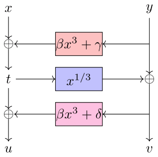
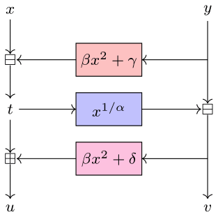

Anemoi |
Anemoi is part of the Arithmetization-Oriented (AO) primitives designed for
advanced cryptographic protocols such as Zero-knowledge (ZK) proofs of
knowledge.
More precisely, Anemoi is a new family of ZK-friendly permutations, that can
be used to construct efficient hash functions and compression functions.
For more details, please find bellow the following resources:
|  |  |